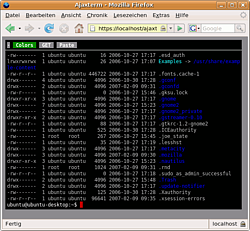

Ajaxterm
Dieser Artikel wurde für die folgenden Ubuntu-Versionen getestet:
Ubuntu 14.04 Trusty Tahr
Zum Verständnis dieses Artikels sind folgende Seiten hilfreich:
 Ajaxterm
Ajaxterm  ist ein webbasiertes Terminal. D.h. nur mit einem Webbrowser auf Clientseite kann man sich auf einem Rechner, auf dem Ajaxterm installiert ist, einloggen und wie in einer Shell auf ihm arbeiten.
ist ein webbasiertes Terminal. D.h. nur mit einem Webbrowser auf Clientseite kann man sich auf einem Rechner, auf dem Ajaxterm installiert ist, einloggen und wie in einer Shell auf ihm arbeiten.
Voraussetzungen¶
Ein kleiner Hinweis zur Sicherheit: Ajaxterm an sich sollte sicher arbeiten, allerdings sollte man darauf achten, dass der Dienst sicher bedient wird, denn Ajaxterm lässt sich nicht ausschließlich an das LAN binden und bringt keine SSL-Verschlüsselung mit.
Befindet sich der Rechner, auf dem Ajaxterm installiert ist, direkt im Internet, so ist Ajaxterm immer zu erreichen. Des Weiteren müsste man sich immer über eine unverschlüsselte Verbindung einloggen. Dies ist nicht zu empfehlen! Daher sollten diese zwei Punkte berücksichtigt werden:
Port
8022per Firewall sperren (oder erst gar nicht weiterleiten)Zugriff nur über einen Webserver wie Apache oder lighttpd als Proxy und mit SSL
Ist Ajaxterm auf diese Art und Weise aufgesetzt, spricht nichts gegen den Einsatz als Webterminal.
Installation¶
Ajaxterm ist in den offiziellen Paketquellen enthalten. Folgendes Paket muss installiert werden [1]:
ajaxterm (universe)
 mit apturl
mit apturl
Paketliste zum Kopieren:
sudo apt-get install ajaxterm
sudo aptitude install ajaxterm
Verwendung¶

Anschließend ist das Webterminal sofort über die URL http://localhost:8022 zu erreichen. Der Dienst lauscht nun auf dem lokalen Rechner nach Verbindungen. Wer Ajaxterm aus dem LAN oder gar dem Internet erreichen möchte, der muss wie im Folgenden beschrieben den Webserver Apache so konfigurieren, dass Apache als HTTPS-Proxy vor Ajaxterm geschaltet ist.
Konfiguration¶
An Ajaxterm gibt es nicht viel zu konfigurieren. Mit einem Editor [3] kann man zwei Optionen in der Konfigurationsdatei /etc/default/ajaxterm setzen.
Port¶
Zum einen lässt sich bestimmen, über welchen Port Ajaxterm auf dem Rechner zu erreichen ist. Üblicherweise ist dies der Port 8022.
# Allow to change the default port used by Ajaxterm PORT="8022"
Port des lokalen SSH-Servers¶
In neueren Versionen von Ajaxterm lässt sich zusätzlich festlegen, auf welchen Port der lokal installierte SSH-Server zu erreichen ist. Nutzt man bei diesem einen anderen Port als den üblichen Port 22, so kann man Ajaxterm hier vermitteln, einen anderen Port zu benutzen:
# Allow to use a different port than 22 to connect to the ssh server SERVERPORT="22"
Ajaxterm steuern¶
Wie alle anderen Dienste bringt Ajaxterm Start/Stopp-Skripte mit. Diese Skripte lassen sich auch zum Kontrollieren des Dienstes verwenden:
# Allgemein
sudo /etc/init.d/ajaxterm {start|stop|restart|force-reload}
# Beispiel
sudo /etc/init.d/ajaxterm restart Über Apache als Proxy¶
Aus den oben genannten Gründen sollte Ajaxterm nicht direkt angesprochen werden sondern nur über Apache und das Modul "mod_proxy_html". Dadurch kann man erreichen, dass die Verbindung zu Ajaxterm über eine per SSL verschlüsselte Verbindung erfolgt.
Voraussetzungen¶
Voraussetzung ist, dass Apache mit den nötigen Modulen "mod_ssl" und "mod_proxy_html" zur Verfügung steht. Im Wiki finden sich in den Artikeln:
die nötigen Informationen, um den Apache-Webserver dementsprechend konfigurieren zu können.
Konfigurationen¶
Prinzipiell muss eine Umleitung eingerichtet werden. Apache soll Anfragen an Ajaxterm weiterleiten. Hierzu muss im passenden "Virtual Host" eine Umleitung in der Art von:
...
ProxyRequests Off
<Proxy *>
Order deny,allow
Allow from all
</Proxy>
ProxyPass /ajaxterm/ http://localhost:8022/
ProxyPassReverse /ajaxterm/ http://localhost:8022/
...eingerichtet werden.
Als konkretes Beispiel soll die Umleitung an Ajaxterm über HTTPS erfolgen. Hierzu muss - wie oben in den Voraussetzungen geschildert - das Modul "mod_ssl" des Apache-Servers aktiv sein. Sollte Apache via HTTPS ausschließlich das lokal installierte Ajaxterm bedienen, so würde man die Datei /etc/apache2/sites-enabled/ajaxterm anlegen und mit folgendem Inhalt füllen [3]:
<virtualhost *:443>
ServerName domain.beispiel.test
ServerAdmin webmaster@localhost
SSLEngine On
SSLCertificateFile /etc/apache2/ssl/apache.pem
ProxyRequests Off
<Proxy *>
Order deny,allow
Allow from all
</Proxy>
ProxyPass /ajaxterm/ http://localhost:8022/
ProxyPassReverse /ajaxterm/ http://localhost:8022/
SetEnvIf Request_URI "^/ajaxterm/u" dontlog
CustomLog /var/log/apache2/ssl-access.log common env=!dontlog
Loglevel warn
ErrorLog /var/log/apache2/ssl-error.log
</virtualhost>Die letzten vier Zeilen dienen dazu, dass Ajaxterm nicht die Logdateien von Apache mit Logeinträgen flutet.
Apache Konfiguration einlesen¶
Ist die Umleitung gesetzt, muss Apache noch seine Konfigurationsdatei neu einlesen. Über ein Terminal [2] kann man dies mittels:
sudo /etc/init.d/apache2 force-reload
veranlassen. Anschließend sollte Ajaxterm (wenn Apache wie im Beispiel angegeben konfiguriert wurde) unter der URL https://localhost/ajaxterm/ zu erreichen sein.
lighttpd als Proxy¶
Auch lighttpd eignet sich als Proxy für Ajaxterm. Dazu muss das Modul "mod_proxy" mittels:
sudo lighty-enable-mod proxy
geladen werden. Danach fügt man in die Datei /etc/lighttpd/conf-enabled/10-proxy.conf die Zeilen:
proxy.server = ( "/ajaxterm/" =>
(
( "host" => "127.0.0.1",
"port" => 8022
)
)
)
ein und startet lighttpd neu. Ajaxterm ist dann (bei ebenfalls aktiviertem SSL) über https://localhost/ajaxterm/ erreichbar. Will man Ajaxterm auch über https://localhost/ajaxterm erreichen (ohne / am Ende), so muss man einfach das Verzeichnis ajaxterm im Wurzelverzeichnis des Webservers anlegen.
Problembehebung¶
Firefox 3.6¶
Ajaxterm funktioniert mit Firefox 3.6 nicht mehr richtig. Zur Lösung dieses Problems schlägt dieser Blogbeitrag  vor, in der Datei /usr/share/ajaxterm/sarissa.js die Zeile 269
vor, in der Datei /usr/share/ajaxterm/sarissa.js die Zeile 269
XMLDocument.prototype.readyState = 0;
durch voranstellen von // auszukommentieren. Das kann aber andere Probleme hervorrufen. Um diese Änderung zu übernehmen, muss Ajaxterm neu gestartet werden. Alternativ kann man versuchen, die JavaScript-Bibliothek Sarissa manuell zu aktualisieren.
Probleme sind auch bei der Tastatursteuerung unter Safari aufgetreten.
- Erstellt mit Inyoka
-
 2004 – 2017 ubuntuusers.de • Einige Rechte vorbehalten
2004 – 2017 ubuntuusers.de • Einige Rechte vorbehalten
Lizenz • Kontakt • Datenschutz • Impressum • Serverstatus -
Serverhousing gespendet von